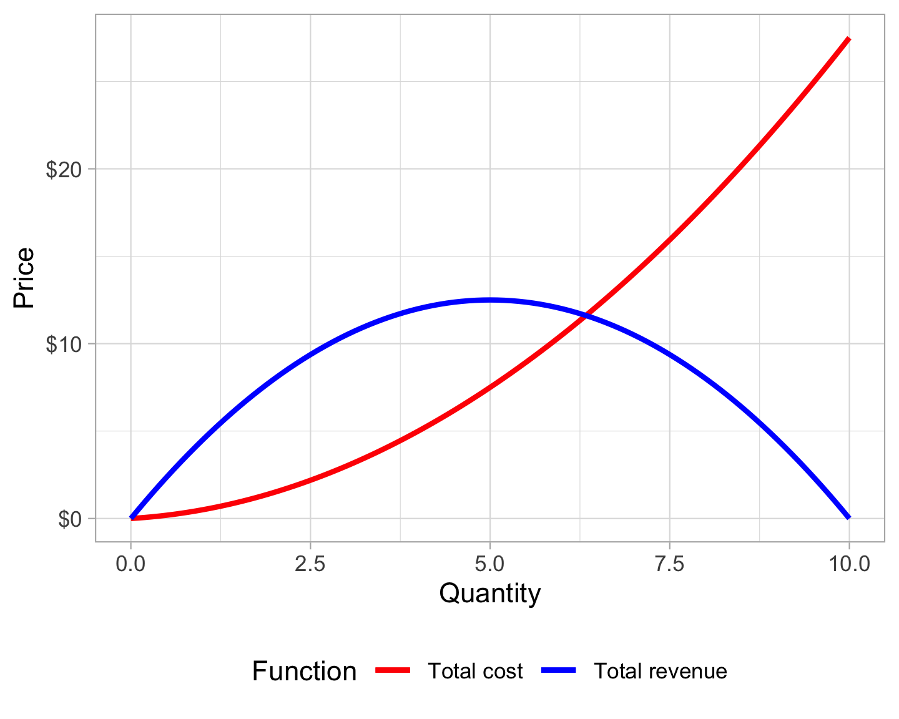
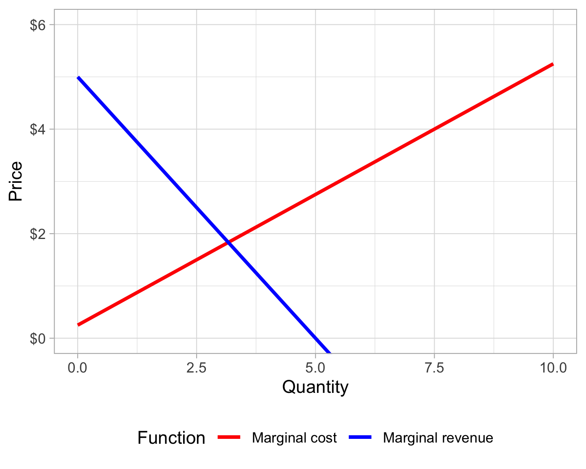
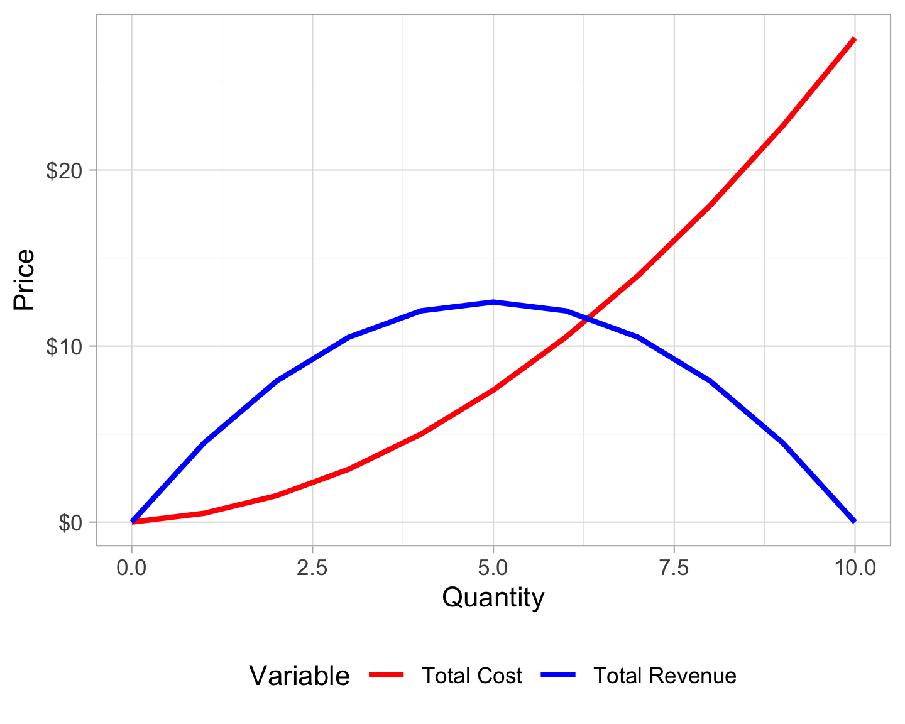
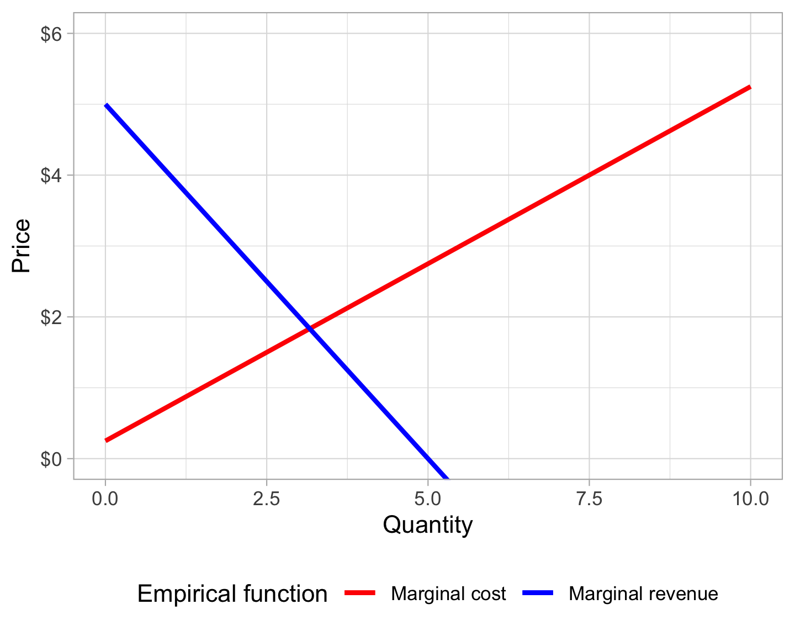

![]()
library(tidyverse)
library(Deriv)
library(pander)
demand <- function(q) 5 - (0.5 * q)
revenue <- function(q) (5 - 0.5 * q) * q
cost <- function(q) (0.25 * q) + (0.5 * q)^2tl;dr: Use functions like Deriv::Deriv(), splinefun(), approxfun(), and uniroot() to do things with derivatives in R, both with actual functions and with existing empirical data
A typical microeconomics problem involves finding the optimal price and quantity of a product, given its demand and cost across different quantities. You can optimize this price and quantity and maximize profit by finding the point where the marginal cost and the marginal revenue (or the first derivatives of the cost and revenue functions) are equal to each other.
For instance, the demand for some product can be defined as \(Q = 10 - 2P\) (where \(Q =\) quantity and \(P =\) price). The revenue you get from selling that product is defined as \(R = PQ\) (just multiplying price × quantity), so through some algebraic trickery and rearranging of Ps and Qs, you can create a revenue function for this demand curve: \(R = 5Q - 0.5Q^2\). The cost function for this product can be defined as \(C = 0.25Q + 0.5Q^2\).
To figure out the optimal profit, we set the marginal cost and marginal revenue equations equal to each other and solve for Q. Here, \(\frac{dC}{dQ} = MC = 0.25 + 0.5Q\) and \(\frac{dR}{dQ} = MR = 5 - Q\), so with algebra we can find the optimal point:
\[ \begin{aligned} MC &= MR \\ 0.25 + 0.5Q &= 5 - Q \\ 1.5Q &= 4.75 \\ Q &= 3.1\overline{66} \end{aligned} \]
Phew. Calculus.
Doing this in R is fairly straightforward and far more flexible and far less algebra-intensive. First, define the functions:
Plotting these functions is easy with geom_function():
ggplot(data = tibble(x = 0:10), aes(x = x)) +
geom_function(fun = cost, size = 1, aes(color = "Total cost")) +
geom_function(fun = revenue, size = 1, aes(color = "Total revenue")) +
labs(x = "Quantity", y = "Price") +
scale_y_continuous(labels = scales::dollar) +
scale_color_manual(values = c("Total cost" = "red", "Total revenue" = "blue"),
name = "Function") +
theme_light() +
theme(legend.position = "bottom")
## Warning: Using `size` aesthetic for lines was deprecated in ggplot2 3.4.0.
## ℹ Please use `linewidth` instead.
Then, using Deriv::Deriv(), create derivative functions for the marginal cost and marginal revenue equations:
mr <- Deriv(revenue, "q")
mc <- Deriv(cost, "q")We can also plot these:
ggplot(data = tibble(x = 0:10), aes(x = x)) +
geom_function(fun = mc, size = 1, aes(color = "Marginal cost")) +
geom_function(fun = mr, size = 1, aes(color = "Marginal revenue")) +
labs(x = "Quantity", y = "Price") +
scale_y_continuous(labels = scales::dollar) +
scale_color_manual(values = c("Marginal cost" = "red", "Marginal revenue" = "blue"),
name = "Function") +
coord_cartesian(ylim = c(0, 6)) +
theme_light() +
theme(legend.position = "bottom")
Finally, use the uniroot() function to look for the point where mc and mr intersect within a given range (here I’m looking between 1 and 10 since the demand curve goes negative after \(Q =\) 10):
optimal_q <- uniroot(function(x) mc(x) - mr(x), c(1, 10))
optimal_q$root
## [1] 3.166667It’s the same answer!
We can then plug optimal_q$root back into the marginal revenue and demand functions to find the optimal price (in a competitive market, the price should be equal to the marginal revenue, but this happens to be a monopoly, so the actual price is higher, but that’s totally unrelated to the topic here):
mr(optimal_q$root)
## [1] 1.833333
demand(optimal_q$root)
## [1] 3.416667
# oh noes monopoliesHowever! Wait! Stop! This is all well and fine if you have precise formulas for demand and cost. But real life is far messier than this. What if you don’t know the underlying equations?
Often in economics, you have a set of quantities and prices based on empirical data. Market research and surveys can estimate the demand for a product, and tracking how fixed and variable costs change over time can estimate the costs for a product, but this data is all empirically based and not based in actual formulas.
For instance, suppose you have this table of prices, quantities, and costs (which is actually really based on the demand and cost functions from earlier):
costs_revenues <- tibble(Quantity = seq(0, 10, 1),
Price = demand(Quantity),
`Total Revenue` = revenue(Quantity),
`Total Cost` = cost(Quantity),
Profit = `Total Revenue` - `Total Cost`)| Quantity | Price | Total Revenue | Total Cost | Profit |
|---|---|---|---|---|
| 0 | $5.00 | $0.00 | $0.00 | $0.00 |
| 1 | $4.50 | $4.50 | $0.50 | $4.00 |
| 2 | $4.00 | $8.00 | $1.50 | $6.50 |
| 3 | $3.50 | $10.50 | $3.00 | $7.50 |
| 4 | $3.00 | $12.00 | $5.00 | $7.00 |
| 5 | $2.50 | $12.50 | $7.50 | $5.00 |
| 6 | $2.00 | $12.00 | $10.50 | $1.50 |
| 7 | $1.50 | $10.50 | $14.00 | -$3.50 |
| 8 | $1.00 | $8.00 | $18.00 | -$10.00 |
| 9 | $0.50 | $4.50 | $22.50 | -$18.00 |
| 10 | $0.00 | $0.00 | $27.50 | -$27.50 |
We can still use R to find the optimal quantity, even without actual formulas. R has two base functions for approximating functions based on existing data. approxfun() will try to fit data linearly, and splinefun() will try to fit data with cubic splines (i.e. it can handle curvy lines better than approxfun()).
First, we can plot the revenue and cost columns to see their shape:
costs_revenues_plot <- costs_revenues %>%
select(Quantity, starts_with("Total")) %>%
gather(Variable, Price, -Quantity)
ggplot(costs_revenues_plot, aes(x = Quantity, y = Price, color = Variable)) +
geom_line(size = 1) +
scale_y_continuous(labels = scales::dollar) +
scale_color_manual(values = c("red", "blue")) +
theme_light() +
theme(legend.position = "bottom")
Because both variables are curvilinear, it’s probably best to approximate their functions using splines with splinefun():
cost_empirical <- splinefun(x = costs_revenues$Quantity,
y = costs_revenues$`Total Cost`)
revenue_empirical <- splinefun(x = costs_revenues$Quantity,
y = costs_revenues$`Total Revenue`)If we compare the empirically-based functions with their real-life counterparts, we can see that the approximation worked great:
cost(1:10)
## [1] 0.5 1.5 3.0 5.0 7.5 10.5 14.0 18.0 22.5 27.5
cost_empirical(1:10)
## [1] 0.5 1.5 3.0 5.0 7.5 10.5 14.0 18.0 22.5 27.5
revenue(1:10)
## [1] 4.5 8.0 10.5 12.0 12.5 12.0 10.5 8.0 4.5 0.0
revenue_empirical(1:10)
## [1] 4.5 8.0 10.5 12.0 12.5 12.0 10.5 8.0 4.5 0.0Determining the marginal cost and revenue functions from these approximations is surprisingly easy because splinefun() objects have a built-in mechanism for returning derivatives with a deriv argument:
mc(1:10)
## [1] 0.75 1.25 1.75 2.25 2.75 3.25 3.75 4.25 4.75 5.25
cost_empirical(1:10, deriv = 1)
## [1] 0.75 1.25 1.75 2.25 2.75 3.25 3.75 4.25 4.75 5.25
mr(1:10)
## [1] 4 3 2 1 0 -1 -2 -3 -4 -5
revenue_empirical(1:10, deriv = 1)
## [1] 4 3 2 1 0 -1 -2 -3 -4 -5Magic!
We can plot these empirically-approximated marginal functions and see that they intersect, as expected:
ggplot(data = tibble(x = 0:10), aes(x = x)) +
geom_function(fun = cost_empirical, size = 1, args = list(deriv = 1),
aes(color = "Marginal cost")) +
geom_function(fun = revenue_empirical, size = 1, args = list(deriv = 1),
aes(color = "Marginal revenue")) +
labs(x = "Quantity", y = "Price") +
scale_y_continuous(labels = scales::dollar) +
scale_color_manual(values = c("Marginal cost" = "red", "Marginal revenue" = "blue"),
name = "Empirical function") +
coord_cartesian(ylim = c(0, 6)) +
theme_light() +
theme(legend.position = "bottom")
Finally, we can use uniroot() to find where these two functions intersect:
optimal_q_empirical <- uniroot(function(x) cost_empirical(x, deriv = 1) -
revenue_empirical(x, deriv = 1), c(1, 10))
optimal_q_empirical$root
## [1] 3.166667It’s the same!
And just like before, we can find the optimal price, given this quantity. But first we have to create an empirical function for the demand. The demand variable is linear here, so we can use approxfun(), but splinefun() works just fine too (and it has built-in derivative capabilities, while approxfun() doesn’t).
revenue_empirical(optimal_q_empirical$root, deriv = 1)
## [1] 1.833333
demand_empricial_spline <- splinefun(x = costs_revenues$Quantity,
y = costs_revenues$Price)
demand_empricial_approx <- approxfun(x = costs_revenues$Quantity,
y = costs_revenues$Price)
demand_empricial_spline(optimal_q_empirical$root)
## [1] 3.416667
demand_empricial_approx(optimal_q_empirical$root)
## [1] 3.416667
# oh noes monopolies againWe can plot all of these things together:
ggplot(data = tibble(x = 0:10), aes(x = x)) +
geom_function(fun = demand_empricial_spline, size = 1,
aes(color = "Demand")) +
geom_function(fun = cost_empirical, size = 1, args = list(deriv = 1),
aes(color = "Marginal cost")) +
geom_function(fun = revenue_empirical, size = 1, args = list(deriv = 1),
aes(color = "Marginal revenue")) +
geom_vline(xintercept = optimal_q_empirical$root,
color = "grey50", linetype = "dashed") +
geom_hline(yintercept = revenue_empirical(optimal_q_empirical$root, deriv = 1),
color = "grey50", linetype = "dashed") +
labs(x = "Quantity", y = "Price") +
scale_y_continuous(labels = scales::dollar) +
scale_color_manual(values = c("Marginal cost" = "red", "Marginal revenue" = "blue",
"Demand" = "darkgreen"),
name = "Function") +
coord_cartesian(ylim = c(0, 6)) +
theme_light() +
theme(legend.position = "bottom")
In this case, the empirical solution and the function-based solution are identical, but that’s only because I created the empirical data from the functions. In real life, though, this same process should work on any empirical price, quantity, and cost data.